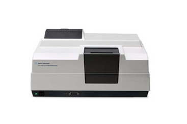
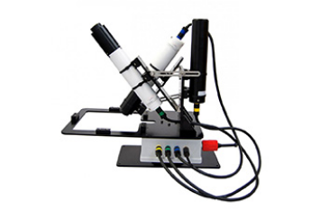
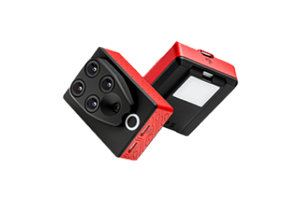
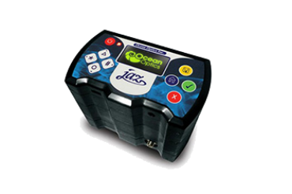
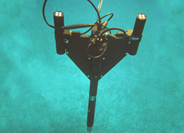
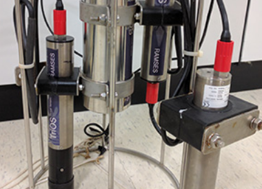

-
STAR소개

-
STAR소식
-
원격탐사
-
극지관측
-
관련사이트
현장관측장비 극지 해양환경의 다양한 특성을 현장에서 관측하고, 인공위성 관측 결과를 검보정합니다.
Sensefly ebee

| 측정 범위 (파장) | -2 ~ +32 ° C |
|---|---|
| 제조사 | Sea-Bird Scientific |
| 특징 | 가시 · 자외선 영역의 빛을 조사하여 특정 성분의 물질이 최대 흡광도를 나타내는 파장을 측정 및 분석 |
DJI s1000

| 측정 범위 (파장) | -2 ~ +32 ° C |
|---|---|
| 제조사 | Sea-Bird Scientific |
| 특징 | 디지털 광센서를 사용하여 해수의 스펙트럼을 측정 및 분석 |
DJI inspire1 v2

| 측정 범위 (파장) | -2 ~ +32 ° C |
|---|---|
| 제조사 | Sea-Bird Scientific |
| 특징 | 멀티 스펙트럼 및 햇빛과 같은 두 가지 센서를 사용하여 흡수하고 반사하는 빛의 양을 관측 및 분석 드론과 호환 가능하여 상공에서 측량 가능 |
DJI F650

| 측정 범위 (파장) | 200 -1100 nm |
|---|---|
| 제조사 | Ocean Optics |
| 특징 | 분광계 채널을 사용하여 빛의 흡광도, 반사율 등 측정 및 분석 대기 및 수질분석, 식음료 품질관리에 활용 |
Sensefly ebee

| 측정 범위 (파장) | -2 ~ +32 ° C |
|---|---|
| 제조사 | Sea-Bird Scientific |
| 특징 | 해색 관측 및 유광층에서 스펙트럼의 변동 측정 및 분석 |
Sensefly ebee

| 측정 범위 (파장) | 320-950 nm |
|---|---|
| 제조사 | TriOS |
| 특징 | 해색 관측 및 유광층에서 스펙트럼의 변동 측정 및 분석 수질 및 기후연구 등에 활용 |